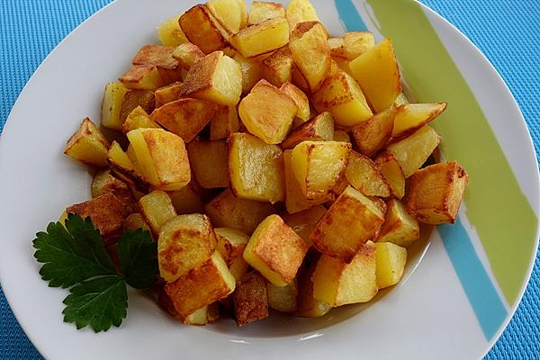

Bratkartoffel

Description
We are going to make crispy Potatoes
Its a common way in germany to cook Potatoes
like that.
Ingredients
- Potatoes (sticky)
- Onion
- Salt and Pepper
Steps
- Peel the Potatoes and cut them
- Put the cut Potatoes into water to remove the starch
- Add some Oil in the Pan add the Potatoes and fry them for
around 35 minutes.
- After 25 minutes add a cut Onion in a extra pan
for around 5 minutes and then add them to the Potatoes.
- Add some Salt and Pepper as needed and its done